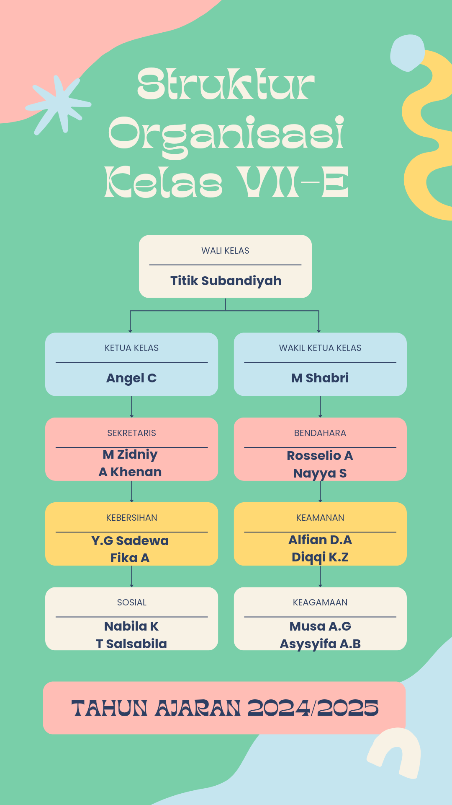

Galeri Kelas 7E


Selamat Datang di Website Kelas 7E SMP 6 Temanggung
Kreativitas dan Prestasi Terus Berkembang
Kelas 7E adalah salah satu kelas yang penuh semangat dan kreativitas di sekolah kami. Diisi oleh siswa-siswa yang memiliki beragam minat dan bakat, kelas ini menjadi tempat berkumpulnya para pelajar yang antusias dalam menimba ilmu. Dengan guru-guru yang berdedikasi tinggi, suasana belajar di kelas ini sangat kondusif, di mana siswa didorong untuk berfikir kritis dan menyelesaikan masalah dengan cara kreatif. Tak hanya unggul dalam akademik, siswa 7E juga aktif dalam berbagai kegiatan ekstrakurikuler seperti olahraga, seni, dan teknologi. Setiap siswa di kelas ini memiliki keunikan tersendiri yang membuat dinamika kelas selalu hidup dan penuh warna. Kelas 7E selalu menekankan kerja sama dan rasa saling menghargai, sehingga tercipta lingkungan yang inklusif dan mendukung. Di dalam kelas, mereka tidak hanya belajar dari buku teks, tetapi juga dari pengalaman sehari-hari dan diskusi terbuka. Kegiatan kelompok sering dilakukan untuk melatih kemampuan komunikasi dan kerja tim, mempersiapkan siswa untuk menghadapi tantangan di luar lingkungan sekolah. Selain itu, kelas 7E juga dikenal dengan berbagai proyek kreatif yang dihasilkan oleh siswanya. Mereka sering terlibat dalam kegiatan seperti pameran seni, kompetisi sains, hingga acara olahraga antar kelas. Dengan semangat kebersamaan yang tinggi, siswa-siswa di kelas ini tidak hanya mengejar prestasi individu, tetapi juga berusaha untuk membawa nama baik kelas dan sekolah di berbagai bidang. Kelas 7E terus berupaya menciptakan generasi muda yang kompetitif, kreatif, dan peduli terhadap sesama.
Berikut adalah anggota kelas 7E beserta perannya dalam struktur organisasi kelas.
Bu Titik
Ketua: Angel
Wakil Ketua: Shabri
Sekretaris: Zidniy
Wakil Sekretaris: Khenan
Bendahara: Naya
Wakil Bendahara: Roselio
Sie Keagamaan: Syifa
Wakil Sie Keagamaan: Musa
Sie Kebersihan: Fika
Wakil Sie Kebersihan: Dewa
Sie Keamanan: Fian
Wakil Sie Keamanan: Diqqi
Sie Sosial: Dimas
Wakil Sie Sosial: Nabila
Hubungi kami untuk informasi lebih lanjut.
-
-